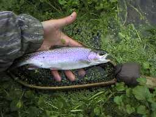
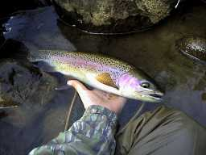
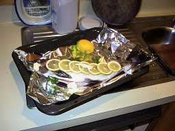

釣行日誌 ＮＺ編
６月 初冬の流れを巡る
2000/06/10 (土)
Ｗ川、午前８時から１１時半まで。水温13℃、ハッチはあるが明確なライズはなし。
国道の橋から左岸を上流へ。あくまでも流速は早く、流れは重たく、冷たい。あまり好ましくない状況。ニンフの重いヤツで探り始めるがキャストに苦しむ。対岸で捕食中のチビニジマスにドライを投げつけるが見事に見切られて愕然とする。あんなちびっ子がなんであんなにシビアにフライをえり好みするのか？
カーブの崖下のくぼみにおよそ５～６尾の型揃いが群れている。被さった藪に苦労しながらドライを落とすと大きいのがジャバン！ あわてて合わせたが外れた。騒ぎでみんな逃げ散った。ちぇっ。
牧場の中を歩いていくと、丘の上から流れを見下ろせる場所に出くわした。朝食を取り出し、流れを凝視しながらサンドイッチをぱくつく。座り込んで視線の揺動が止まると、川の流れの中の動き、褐色の影の移動、などがよく見えてくる。川底のエグレ（白い砂が残っている）に良型のニジマスが数尾。あちらこちらに。しめて50mほどの瀬に７～８尾が視認できた。あとは釣るだけ。（笑）

とはいえ、流心の流れの速い底近くに定位する鱒にめがけて重いニンフをキャストして流し込むのは難しく、あっさりあきらめる。
代わりに流れの脇、岸沿いに定位してドライに反応するニジマスを狙う。
ポチャン！ シャパッ！ ビチョン！ フワッ！ などという反応で最大30cmぐらいまでの鱒が釣れる。ドカン！ が無いのが寂しい。
静かにウェーディングしていくと足元から浮かび上がった鱒がゆっくりフライをくわえ、ストライクとともに激しい戦いを魅せる。
最後に水温を測り、（笑） 川を後にする。
別のＷ川 午後１時～３時。
水は澄んでいるが少し牧場の濁り。
ハッチあれどもライズ無し。大物が産卵期の気まぐれな定位。チビニジマスは多数。
帰りしな、対岸でライズを発見。会心のキャスト、すかさずのライズであったが、フッキングに失敗。ラインがたるみすぎていた。反省。
2000/06/18 (土)
山麓の川、午後0:30より4:00まで。
橋詰めの長淵で、小さな鱒が定位しているのを発見。弁当を食べつつ観察。とたんに気づかれ逃げられる。あれがここにいるなら上流のホットスポットにはもっと大きいのがいると予想。予想通り例のポイントからでかい鼻がライズしてフライをくわえた。タイミングとしてはまだ早めだが、落ち着いて合わせると、重い引きが伝わる。派手なジャンプは見せないが、ジャンプからテールウォークになりかけの横走りで抵抗した。慎重にこらえて最後はネットで掬った。体高のある鱒だが頭は小さい。メスであろう。
晴れ間には小さなメイフライがハッチしている。しかし風が強くにわか雨混じりの天候でキャストに苦労する。都合２尾がライズ、１尾が逸走しただけで芳しくない一日。と思ってドッグレッグの淵の上流にあるお気に入りの長瀬に来た。静かに右岸から近づいて逆手でアダムス・パラシュートをがんばってキャスト。流れ込みの中程からこれまたデカイ鼻面がライズ。ぱっくりくわえる。

ブリントさん言うところの「ぅわんふ」というやつである。ジャンプはないものの、一番強くしたドラグを鳴らしつつ上流へ突進する。いい型である。まだ合わせが早いなぁ。反省。
その鱒は、流れ込みのどんづまりまで行ってから今度は岸沿いの藪に逃げ込む。慎重にラインを巻きつつ近づく。ティペットは６ポンドなので心配はない。ただ竿が柔いのが問題である。十分弱ったところで取り込もうとするが、まだまだ元気で下流に逃げる。しつこく耐えながらなんとかネットに納めた。顔つきの険しいオス、45cmの虹鱒、であった。パラシュートをぱっくり飲み込んでいた。
来る途中で見た、ピロンギ山麓に架かる虹が正夢となった。
非常に複雑な心境であるが、鱒を草むらに上げ、ナイフでとどめを刺す。一瞬で目が死んで上を向いた。食卓のために釣るのは非常に緊張する。釣れて良かった。

明くる日曜日にオークランドのジョー夫人を訪ね、手みやげの鱒を料理してもらった。オーブンでホイル焼きである。美味であった。肉がとても弾力がある。油ッ気も少ない。腹にパセリを詰め、レモンを魚の上に載せて30分ほど蒸し焼きにするとできあがり。ああ、幸せ。
胃の中身はさほど満杯ではなかったが、ニンフ、そしてでかい蜂のような虫を食べていた。体重900g、45cm、ちょうど２ポンドの鱒。成仏してください。
釣行日誌ＮＺ編 目次へ
サイトマップ
ホームへ
お問い合わせ